Show a sequence of six images of scene `CBspheres.dae` rendered with `max_ray_depth` set to 0, 1, 2, 3, 4, 5, and 100. The other settings should be at least 64 samples per pixel and 4 samples per light. Make sure to include all screenshots.
|
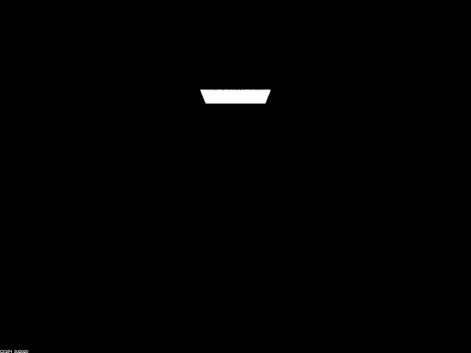
|
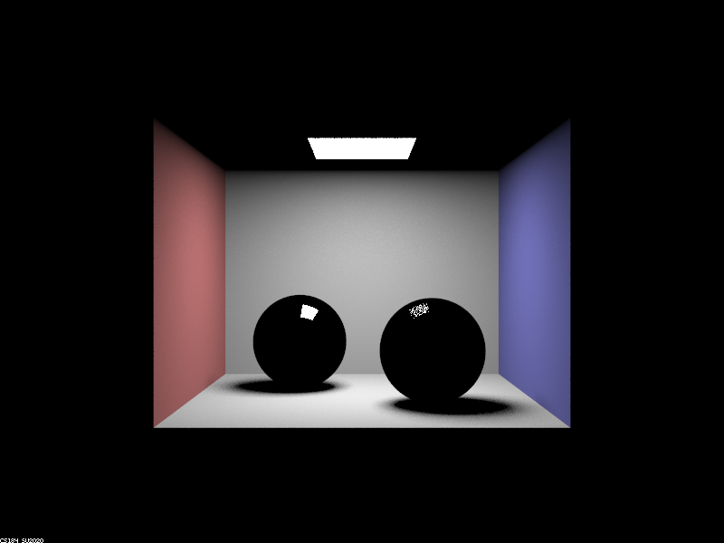
|
|
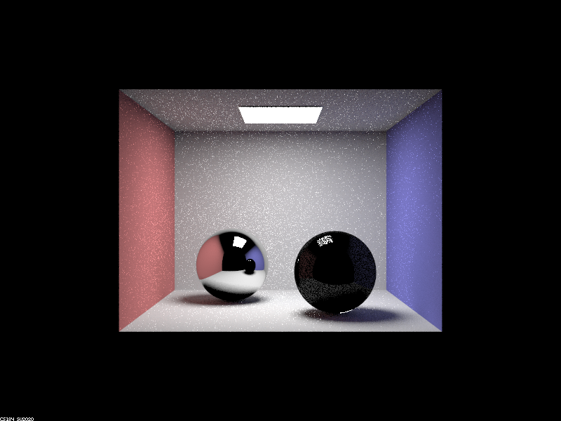
|
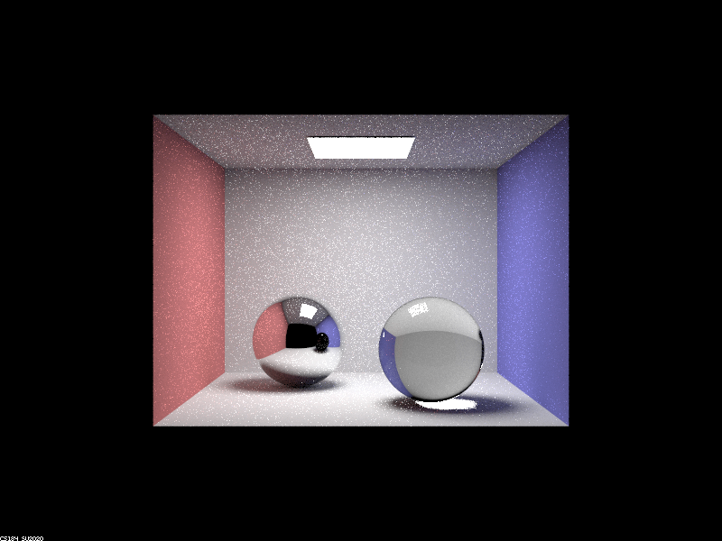
|
|
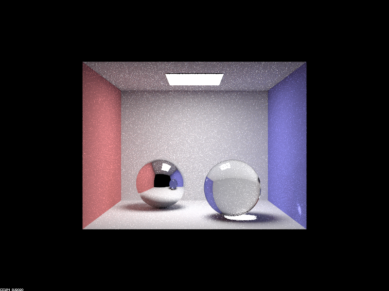
|
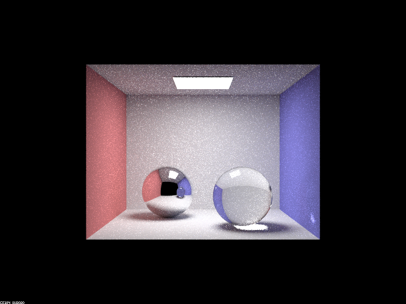
|
|
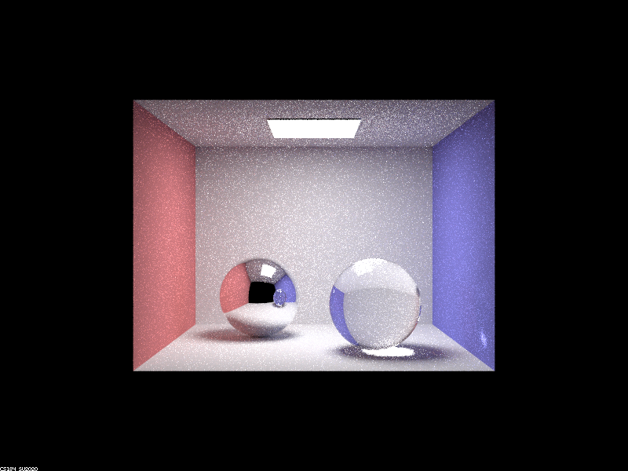
|
Point out the new multibounce effects that appear in each image.
0 bounce:
Nothing in the scene is lit up aside from the light sources.
1 bounce:
Walls and floors are lit up through direct lighting. The two spheres are pitch black aside from the reflection of the direct light source on them.
2 bounce:
The ceiling is lit up by indirect lighting from the scene. The mirror sphere reflects both the direct and indirect light from scenes in the room. Glass sphere reflects the indirect lighting from wall behind the camera. The shadows under the spheres are brighter.
3 bounce:
The glass sphere is transparent now. The reflection of the glass sphere on the mirror sphere is of a black sphere. Part of the shadow under the glass sphere is completely white now due to the light from the direct light passing through the glass ball.
4 bounce:
The edges of the glass sphere are more transparent and the reflection of the glass ball on the mirror ball is now an accurate reflection of a glass ball. There is also a white spec on the wall from the mirror ball reflecting light through the glass ball.
5 bounce:
Inside of glass sphere is brighter.
100 bounce:
The entire scene is significantly brighter.
Explain how these bounce numbers relate to the particular effects that appear. Make sure to include all screenshots.
With 0 bounce, the entire room is dark aside the light sources due to the absence of light rays in the scene.
With 1 bounce, the walls and floors are lit up. Both spheres are pitch black aside from the reflection of the light source on their surfaces due to the absence of indirect lighting from the room (there is nothing to reflect aside from the direct light source).
With 2 bounces, the shadows under the spheres are brighter due to the indirect lighting from the walls. Furthermore, the ceiling is also lit up from indirect lighting. The mirror sphere reflects the walls, floors, light source and glass sphere but not the ceiling. This is due to the indirect lighting or direct lighting coming off of these sources. Note that there is no indirect light emitted from the ceiling because it takes 2 bounces for ceiling to get lit up. Finally, the glass sphere has a mild reflection of the wall behind the camera and floor due to indirect lighting.
With 3 bounces, the glass sphere now shows the wall and floors because indirect light from the walls and floors are able to intersect one side of the sphere, go through it, and intersect with the other side of the sphere. Additionally, there is a white spot under the glass sphere. This is because the 3 bounces allow direct lighting to intersect the glass sphere's surface, travel through the sphere and intersect with the other side of the sphere, and finally exit the sphere and intersect the floor. Finally, the mirror sphere reflects the ceiling due to the ceiling emitting indirect lighting.
With 4 bounces, the mirror sphere reflects the transparent glass sphere because rays from indirect lighting are now able to exit the sphere an intersect the mirror ball. To elaborate, indirect lighting from the wall intersects the sphere, travels through it and intersects with the other side of the sphere, and finally exits the sphere, intersecting the mirror sphere. Furthermore, there is a white spec on the blue wall to the left of the glass sphere due light from the mirror sphere reflecting light through the glass sphere onto the wall.
With 5 bounces, the glass sphere is slightly brighter due to light from the bright spot under the glass sphere bouncing back into the sphere and intersecting the otherside of the sphere.
With 100 bounces, the entire scene is brighter because direct and indirect lighting from all over the scene is able contribute to the brightness of any pixel on the scene via bounces.
In a few sentences, explain the differences between a pinhole camera model and a thin-lens camera model.
All objects captured by a pinhole camera are in perfect focus, as rays cast through each pixel travel straight out into the scene.
However, with a thin-lens camera, rays are randomly cast from the pixel onto various places on the lens, and then all converge onto the point in focus at
focalDistance. Now, rays cast from each pixel to a certain point do not all arrive in the same direction and thus we observe a blurring effect.
Casted rays that intersect objects in front of the plane of focus or behind it do not hit the exact same place on the object (unlike in a pinhole camera)
Therefore, the pixel that the rays were casted from will display the average value over multiple locations on the object (or even over multiple objects if some of the rays miss due to divergence!)
Show a "focus stack" where you focus at 4 visibly different depths through a scene. Make sure to include all screenshots.
|
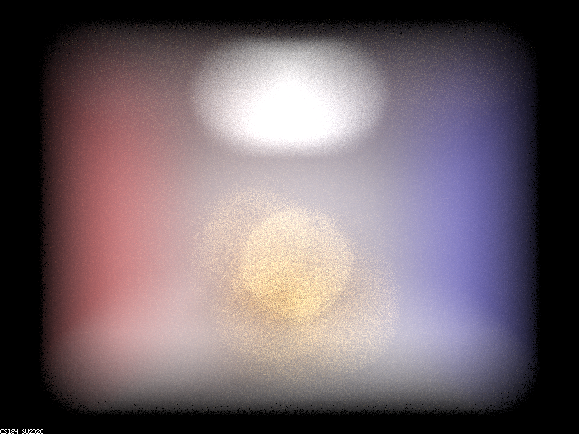
|
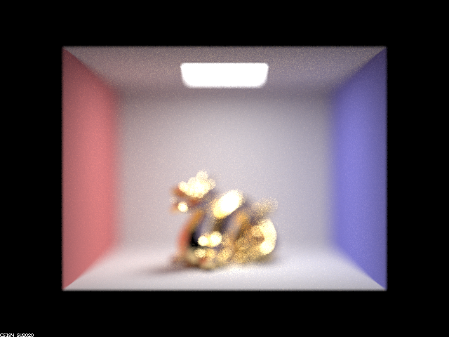
|
|
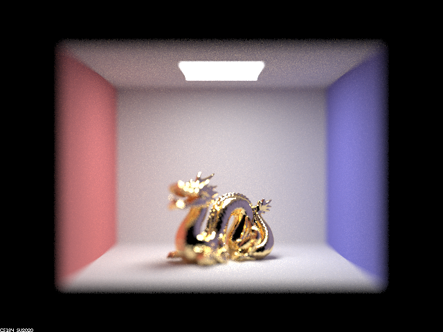
|
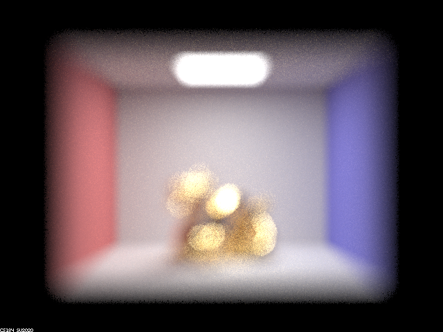
|
Show a sequence of 4 pictures with visibly different aperture sizes, all focused at the same point in a scene. Make sure to include all screenshots.
|
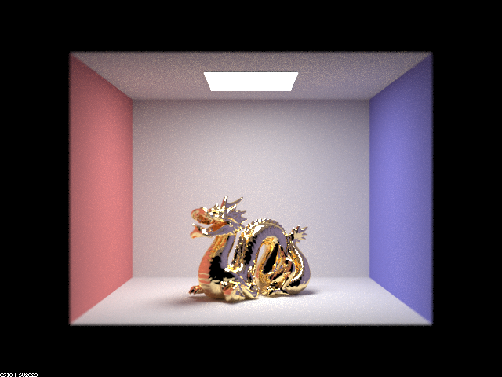
|
|
|
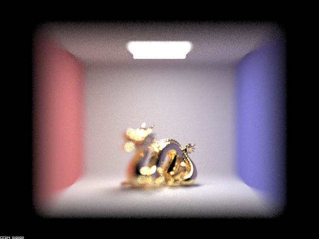
|
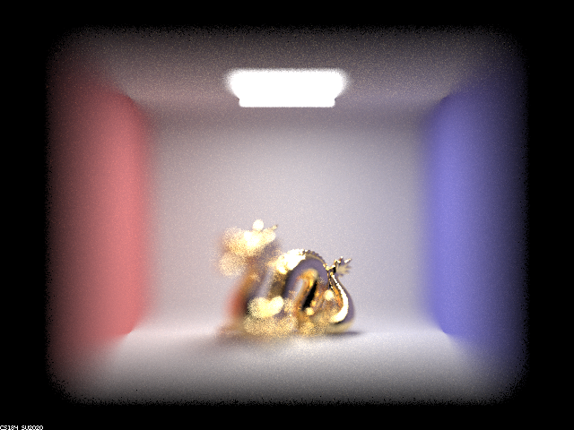
|